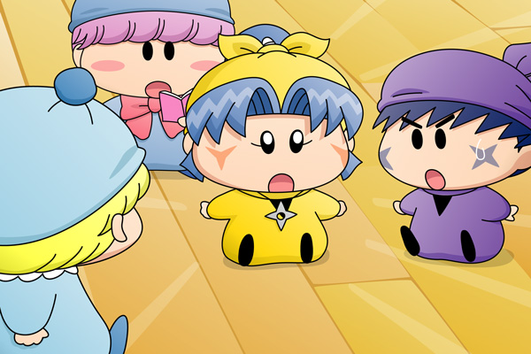

ムルモ「アロマしゃんが殴られた時間・・・２日目の夕食までの時間は、
皆しゃん自分の部屋にいたわけでしゅから、全員アリバイ無し
ということになりましゅね」
リルム「そうですわね、わたくしも一人で部屋で休んでいましたし」
サスケ「ヤマネとハンゾーはオイラの部屋に遊びに来ていたぜ」
ハンゾー「みんなで兄貴のことを話していたのら～」
ヤマネ「はい。私たちはアロマ殿と同じ階ですが、
アロマ殿の部屋へ向かう妖精の姿も見なかったでございます」
クモモ「私はキッチンで夕ご飯の準備をしていたクモ・・・」
アクミ「あたいは部屋で『妖精探検隊』を見ていたよ」
ミルモ「オレも同じのを見ていたぞ。
女の子隊長のコハルがまたかわいいんだよなぁ、にょほ～」
リルム「もう、ミルモ様ったら・・・」
クモモ「そういえばアロマ殿の部屋に残されていた紅茶は
まだ暖かかったクモね」
ムルモ「そうなんでしゅ。
おそらく犯人は夕食の直前までアロマしゃんと一緒にいて、
犯行に及んだ後は紅茶を片付けることも出来ないまま部屋を
後にしたと考えられるでしゅ」
ミルモ「ということは一番最後に食堂に入ってきた妖精が怪しいん
じゃねーのか？」
ムルモ「それはどうでしゅかね・・・」
アクミ「でも何だって犯人はアロマを・・・？」
ムルモ「それはアロマしゃんがヤシチしゃんが殴られた事件について
犯人に関する何かに気付いてしまったからでしゅ」
みんな「えっ」
みんなが一斉にムルモの方へ振り返りました。ムルモもミルモの方へちらっと視線を送りましたが、ミルモは他の妖精と同じように驚いただけの表情をしています。とりあえずムルモは、アロマが見たというミルモの後ろ姿のことは黙っておくことにしました。
リルム「そうなりますと、犯人は口封じのためにアロマさんを・・・？」
パンタ「ボクたん怖いですっち・・・」
ミルモ「だからオレに抱きつくなっての・・」
アクミ「くそーっ、犯人が分かったら絶対ぶん殴ってやる・・・！」
サスケ「でもアロマはいったい何に気がついたんだぜ？」
ハンゾー「ぐっすりおやすみハンマーを持ってる妖精を見ちゃったのら？」
ヤマネ「ムルモ殿はご存じなのでございますか？」
ムルモ「・・・」
ミルモ「？」
サスケ「パピィの方はどうなんだぜ？」
ハンゾー「コーヒーマシュマロのトリックはすごく難しいのら」
ムルモ「これはボクも分からないんでしゅが・・・」
アクミ「何だよ、結局わからないじゃん」
サスケ「そうだそうだ～」
ハンゾー「なのら～」
ムルモ「・・・だけど手がかりがまったく無いということが逆に
引っかかるんでしゅよね」
ヤマネ「え？」
ムルモ「もしかしたら事件はもっと単純で、ボクたちが勝手に
深く考えすぎていただけかもしれないでしゅ」
パンタ「よくわからないですっち」
リルム「ムルモ様、それはどういうことでございますか？」
ムルモ「コーヒーマシュマロはパピィが食べてしまったでしゅけど、
犯人はもともとボクだけを狙っているように見えましゅよね？」
ミルモ「ああ、そうだったっけな」
ムルモ「ニコニコンＣが塗られたコーヒーマシュマロがどの席に並べられる
かは誰にも分からなかったでしゅし、それに誰がどこの席に座る
のかも確実には決まっていなかったでしゅ」
リルム「ムルモ様がお座りになってから塗られたという可能性は？」
アクミ「いや、あの状況じゃ犯人にもそんな暇は無かったと思うね」
ムルモ「こう考えてみるのはどうでしゅか？
犯人の狙いはボクだけではなくて、みんなだったとしたら・・・」
ミルモ「どういうことだよ、ムルモ」
パンタ「そうですっち、ボクたん何も悪いことしてないですっちよ」
ムルモ「犯人はボクだけを笑わせるのではなくて、事件をこれ以上
捜査させないための脅しだとしたら・・・」
ミルモ「でもそれだと犯人も間違ってニコニコンＣが塗られた
コーヒーマシュマロを食べちまうかもしれないんだぞ？」
ムルモ「初めからコーヒーマシュマロを食べる予定のなかった妖精が
いたとしたら・・・」
パンタ「ボクたんたちと違うお昼ごはんですっち？」
パンタの言葉にみんなははっとなり、そしてある妖精の方へ振り返りました。
ヤマネ「えっ」

また少し間が空いてしまい申し訳ありませんが、ムルモの推理も核心へと迫ってきました。果たしてこの妖精が本当に犯人なのか？次回のムルモの活躍をお楽しみに！！
(2008/11/15)